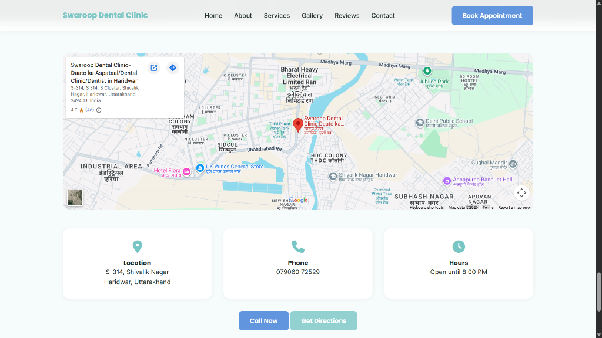
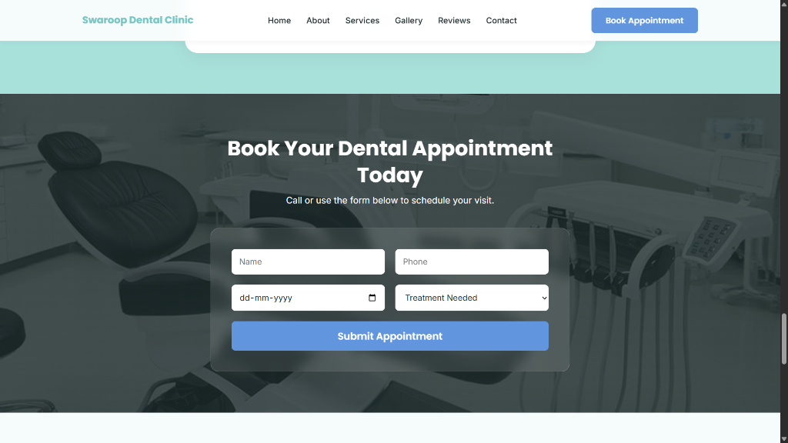
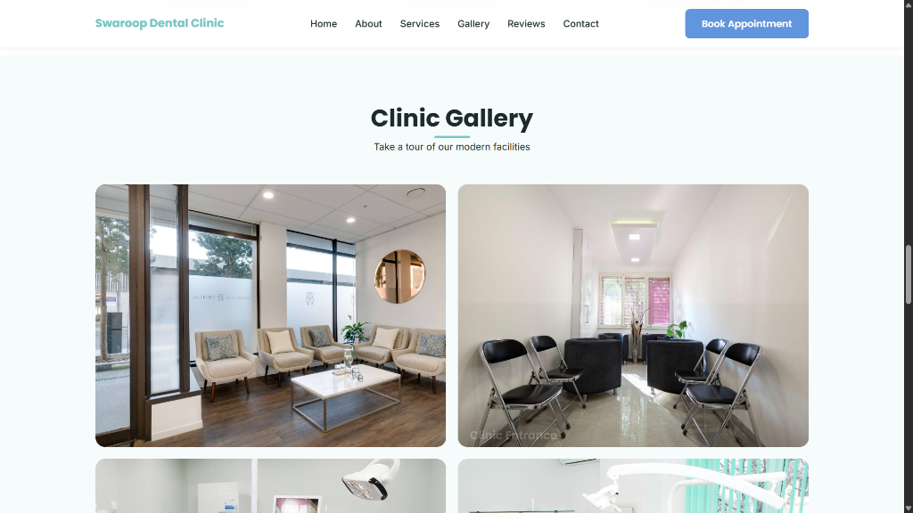
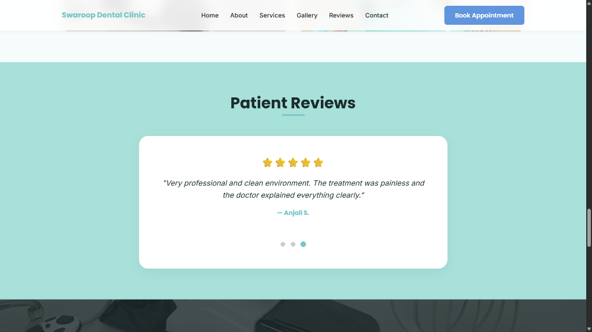

Overview
The Swaroop Dental Clinic website was developed as a modern and user-friendly platform designed to help patients easily learn about the clinic, explore services, and book appointments online.
This project was built entirely by me with a strong focus on creating a professional medical website that combines clear information, simple navigation, and functional features that improve patient interaction.
The goal of the website was to create a trustworthy digital presence for the clinic while making it easy for visitors to contact the clinic and schedule dental appointments.
My Role
I designed and developed this website independently from start to finish. Every component of the website was implemented with careful attention to usability, functionality, and visual clarity.
The project required building both the visual interface and the interactive elements that allow users to take actions directly from the website.
The entire system was developed with full dedication to ensure that every feature works smoothly and reliably for visitors.
Key Features
Appointment Booking System
The website includes a fully functional appointment booking form that allows patients to schedule visits directly through the website.
Users can enter:
- their name
- phone number
- preferred appointment date
- required treatment
Once submitted, the system processes the request efficiently, allowing the clinic to receive appointment inquiries directly from the website.
Click-to-Call Contact Button
A working Call Now button is integrated into the website to allow visitors to quickly contact the clinic.
With a single click, users can instantly call the clinic using their device, making it easier for patients to reach the clinic without manually dialing the number.
Google Maps Integration
The website includes a fully embedded Google Maps location system that displays the exact location of the clinic.
This allows visitors to:
- easily locate the clinic
- view nearby landmarks
- get directions directly from the map
The map integration improves accessibility and helps patients find the clinic without confusion.
Navigation & Interactive Buttons
Several interactive elements were implemented across the website to improve the user experience.
These include:
- Book Appointment button that smoothly directs users to the booking section
- Call Now button for instant contact
- Get Directions button linked with Google Maps navigation
- navigation menu for quick access to sections such as Services, Gallery, Reviews, and Contact
All buttons and interactive elements were fully implemented and tested to ensure smooth functionality.
Patient Review Section
The website includes a review section designed to build trust with potential patients by displaying feedback from previous visitors.
This section helps reinforce the credibility of the clinic and creates a stronger sense of reliability for new patients visiting the website.
Clinic Gallery
A gallery section was implemented to showcase the clinic environment and facilities.
This helps patients visually understand the cleanliness, equipment, and professional environment of the clinic before visiting.
Design Approach
The design of the website focuses on creating a calm, clean, and professional healthcare experience.
Key design considerations include:
- soft color palette suitable for healthcare websites
- clean typography for easy readability
- spacious layout for visual comfort
- clear call-to-action buttons for booking and contact
These design choices help visitors feel confident and comfortable while interacting with the website.
Outcome
The final result is a fully functional dental clinic website that allows patients to easily access information, book appointments, and contact the clinic.
The project demonstrates my ability to independently build complete websites that combine visual design, interactive features, and practical real-world functionality.
Every feature of the website was implemented with full dedication to ensure reliability, ease of use, and a professional online presence for the clinic.
Screens



